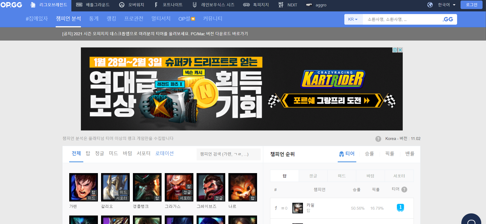

오피지지는 리그 오브 레전드의 전적과 통계를 확인할 수 있는 사이트다. 2013년 1월 7일 오픈, 그전까지는 Fow라는 전적검색 사이트가 있었으나 반년가량 정전된 틈을 타 깔끔한 전적검색과 빠른 검색속도로 지분을 가져가는데 성공했다. 처음 서비스를 시작할 때에는 '더미 클라이언트'를 이용해 서버의 정보를 가져오는 방식으로 서비스했다고 한다. 라이엇 게임즈에서 리그 오브 레전드의 API를 공개한 이후 API를 기반으로 하여 데이터를 보여준다. 이 때문에 공식 API 서버에 장애가 발생하면 OP.GG 역시 전적 검색이 되지 않는다. 최근 라이엇게임즈와 파트너십을 맺고 리그 오브 레전드 '격전'의 팀 찾기 서비스를 제공하는 PLAY.OP.GG를 오픈했다. 그리고 오버워치, 배틀그라운드 등 다른 게임으로도 시장을 넓혀가고 있다.
편의 기능도 많은데 승률/픽률/밴률 등으로 밖에 챔피언 정렬을 못하는 포우와는 달리 오피지지는 시즌 7 즈음부터 '챔피언 티어' 순 정렬을 지원한다. 승률과 픽률을 종합적으로 고려하여 현 메타 OP 챔들을 소개해주는 기능이다. 예전 롤인벤의 유저 한 분이 'TB지표'라고 비슷한 통계를 매주 올렸었는데 이를 정식으로 서비스 한 것이다. 덕분에 픽률은 높은데 승률이 낮거나 승률은 높은데 그게 사실 소수점 미만의 장인들이 만들어낸 허수 승률이거나 하는 사례들을 걸러서 픽률도 높고 승률도 높은 픽들을 한눈에 볼 수 있게 해줘서 현재 메타 챔들을 빠르게 파악하기 수월하다.
